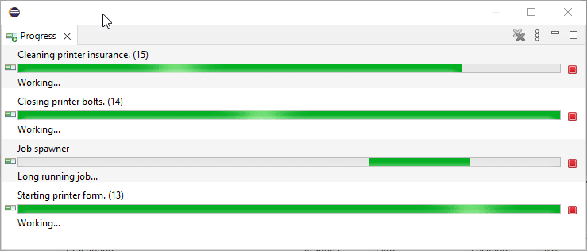
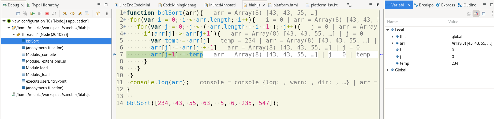
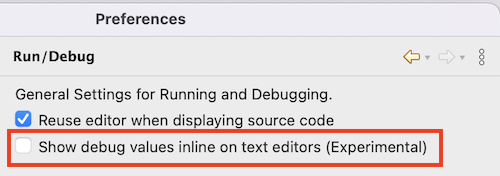
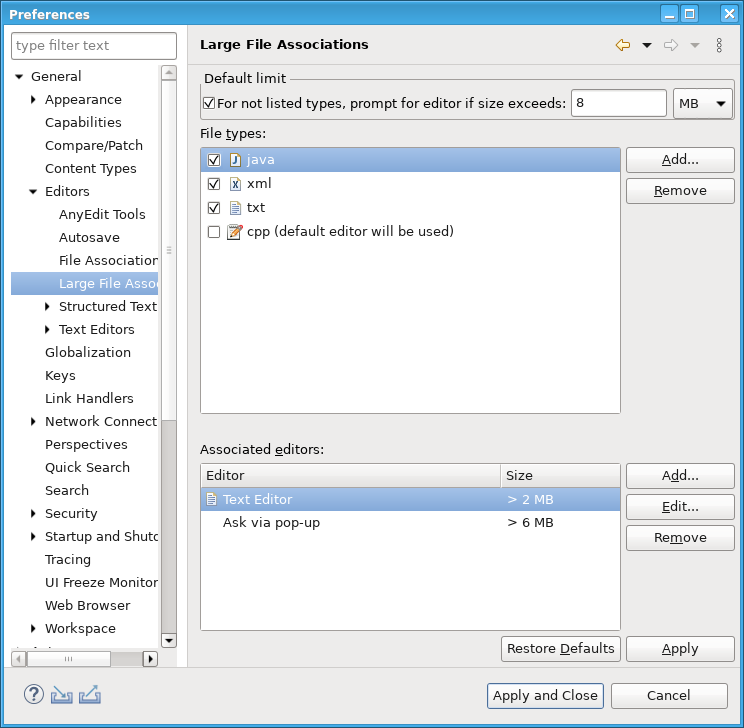
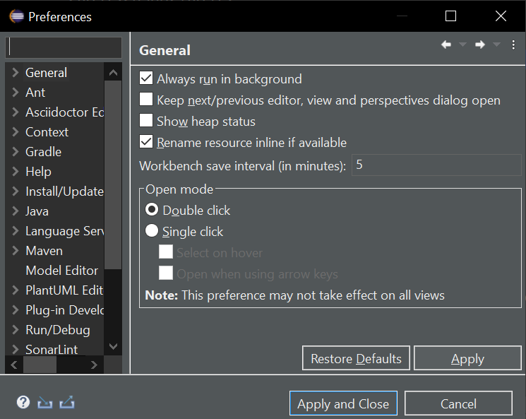

Views, Dialogs and Toolbar
Old behaviour: long running job jumps around.
New behaviour: long running job stays on top.

Debug
This is an experimental feature and since this requires extra effort for the debuggers to enable it, not all debuggers may support it yet e.g. Java debugger does not support it yet.


Preferences
The preferences can be set via the respective preference page: General > Editors > Large File Associations

The preferences can also be via product customization (-productCustomization <path to file>), e.g. contents:
# all types with a preference, needed by the preference page UI org.eclipse.ui.workbench/largeFileLimits_types=java,xml,txt org.eclipse.ui.workbench/largeFileLimits_disabled=cpp # default, show prompt for all to types that don't have a preference org.eclipse.ui.workbench/largeFileLimits_default_enabled=true org.eclipse.ui.workbench/largeFileLimits_default_value=100000 # specific editor associations per type and file size org.eclipse.ui.workbench/largeFileLimits.java=4096,org.eclipse.ui.DefaultTextEditor,8192,largeFileLimits_prompt org.eclipse.ui.workbench/largeFileLimits.xml=1048576,org.eclipse.ui.DefaultTextEditor,77777,Emacs org.eclipse.ui.workbench/largeFileLimits.txt=2048,largeFileLimits_prompt
Themes and Styling
New native look and feel:

Old look and feel:
General Updates

This should work out of the box for all
processes using or extending org.eclipse.debug.core.model.RuntimeProcess, and can be
easily added to other processes by specifying IProcess.ATTR_PROCESS_ID process attribute.
Additionally, the Java debugger now shows process id for the process element in the Debug view.